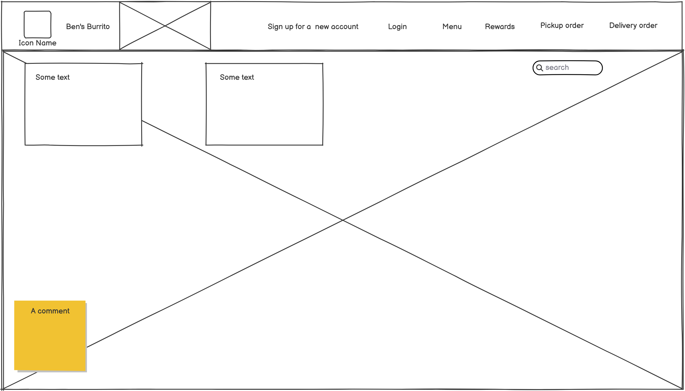

The purpose of this personal website project is to use the web coding skills that i will learn in this Javascript Bootcamp to build a front end website for my new restaurant venture.
The typical customer of my website will be someone who not only loves breakfast burritos, but also has a good grasp of current online ordering technologies on the market, especially when it comes to ordering online from restaurants for pickup or delivery. My typical customer will also like their food made to order with fresh ingredients, and since we'll be using cage-free raised chickens without being fed antibiotics, they may have a stronger desire to order clean chicken meat. Our customer We'll also have freshly hydroponically lettuce and tomatoes, and we'll make our tortillas from scratch. Our customer may also be attracted to our fast eco-conscious electric vehicle delivery so we help cut emissions to the environment while delivering our food. We will be open at very early hours when most restaurants aren't open so the early birds customers can order from us. Last but not least, our prices will be very reasonable, we'll have the best value in town for a good sized freshly made breakfast burrito.
The goal of this project is to build an attractive, professional looking, front page of my website to get my business website up in running. The ultimate goal is to eventually have a full working website for my restaurant that not only display the menu information but take online orders and payments. A specific goal is to also get on the DoorDash website for food ordering.
Bob Smith, 36, is an educated middle income earner who is health conscious and comfortable with current technologies using the internet. He is an early riser and absolutely loves breakfast burritos with homemade tortillas with fresh eggs and fresh cut potatoes. Bob is also a concerned about good business practices especially when it comes to animal cruelty, he prefers our cage-free raised chickens without being fed antibiotics. Bob is also attracted to our freshly hydroponically grown tomatoes and lettuce, for it's grown without herbicides and pesticides! Bob also likes our early open hours when most restaurants are closed or not doing delivery. Bob also likes our eco-conscious electric vehicle delivery so we help cut emissions to the environment while delivering our food. Bob also loves our very reasonable prices, for he recognizes that we'll have the best value in town for a good-sized freshly made breakfast burrito. lastly Bob loves the user experience on Ben's Burrito website with an easy to read concise menu with easy ordering and payment processing. Bob has now become a lifetime regular at Ben's Burrito!!!
Mr. Wannabeauser is hungry early in the morning, it's 5am and he's craving a green chili breakfast burrito with fresh eggs and fresh cut potatoes, and a freshly made tortilla. He scrolls through the listings on Door Dash and comes across Ben's buritto that states fresh ingredients, good prices, and fast delivery times. He scrolls through the menu, picks out the ingredients he wants on his burrito, and orders it.
